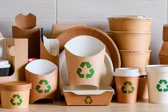
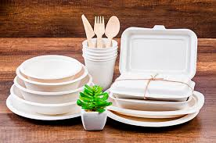

son alternativas ecológicas a los desechables convencionales, fabricados con materiales renovables como bambú, caña de azúcar, almidón de maíz, fibra de trigo o celulosa, que son biodegradables y/o compostables, reduciendo la contaminación y el tiempo de degradación a semanas en lugar de siglos, algunos incluso incluyen semillas para plantar después de su uso.
Materiales comunes
Caña de azúcar (Bagazo): Resistente, ideal para alimentos calientes y fríos, sin químicos blanqueadores.
Bambú: Material natural, fuerte y de rápido crecimiento, muy sostenible.
Almidón de maíz (PLA): Bioplástico compostable, transparente y apto para bebidas frías


